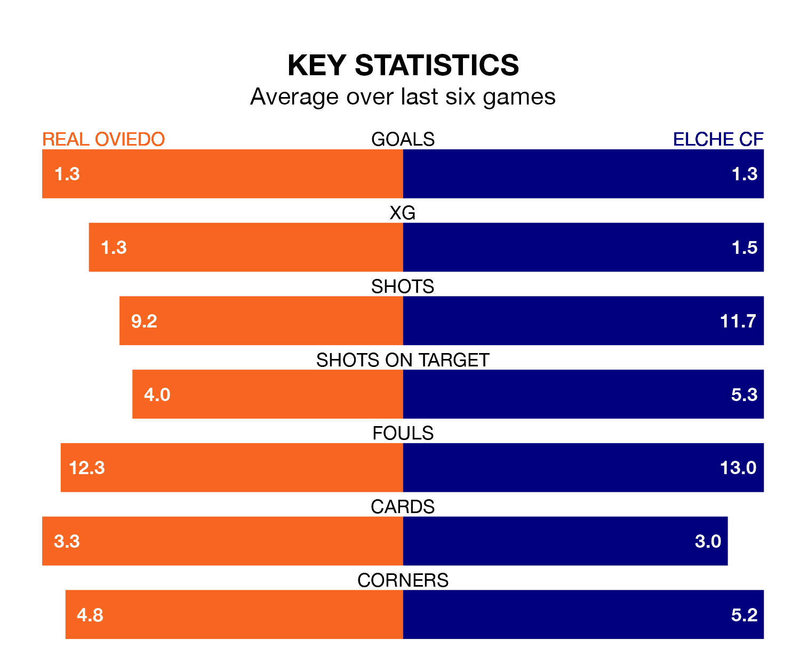

Elche CF travel to Real Oviedo on late Friday in the Segunda División.
The visitors come into the game on the back of a defeat in their last match, having lost to FC Cartagena 2-1 at home, with a goal from Óscar Plano.
Real Oviedo, meanwhile, drew their last match, 2-2 against Racing Santander, with their goals scored by Daniel Pedro Calvo San Román and Alvaro Mantilla Pérez.
With Leo Román between the sticks, Oviedo can rely on one of the league's safest pair of hands. He has kept eight clean sheets in his 19 appearances this season, and only two other 'keepers – Sporting Gijón's Orlando Rubén Yáñez Alabart and CD Tenerife's Juan Soriano Oropesa – have been able to prevent the opposition scoring on more occasions in the Segunda División.
In Elche's net, Miguel San Román Ferrándiz has five clean sheets in 12 games. He has conceded a goal every 108 minutes, 30% more often than the 143 minutes between goals for Román Riquelme.
With 19 goals in 19 games so far this season, Real Oviedo are scoring at below the league average rate with 1.0 goals per game. But they are conceding fewer than average too, letting in 13 goals at a rate of 0.7 per game.
Elche CF are also below average scorers, with 1.0 goal per game, compared to a league average of 1.2. They have also conceded 1.0 goal per game.
The visitors are ninth in the table after 19 games, of which they have won eight and drawn five, earning 29 points.
The home side are two places behind Elche in 11th, with six wins and eight draws putting them on 26 points.
Oviedo are in mixed form in the Segunda División, with two wins and three draws from their last six games.
With three wins and a draw over that period, Elche's form is slightly better – they have taken 10 points from 18, compared to Oviedo's nine.
